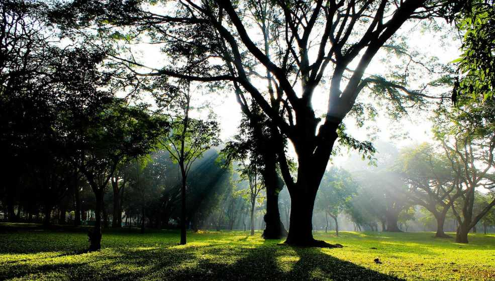
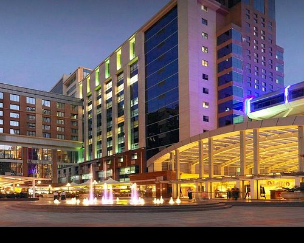
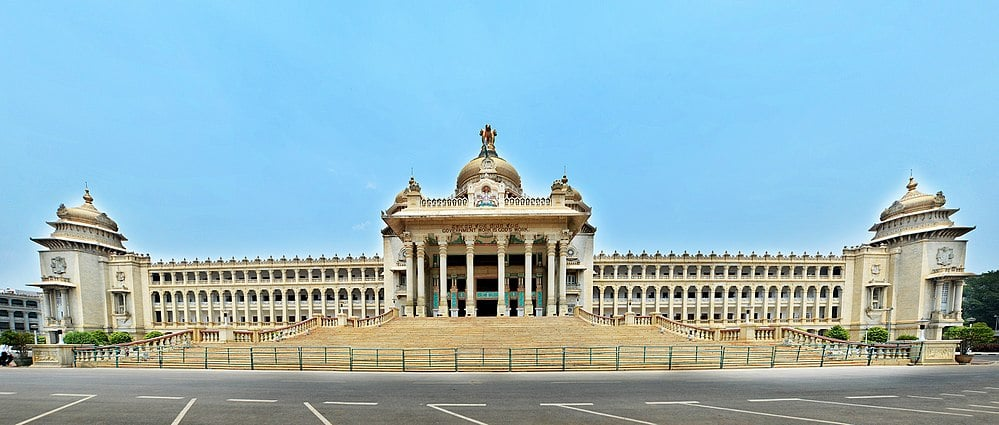
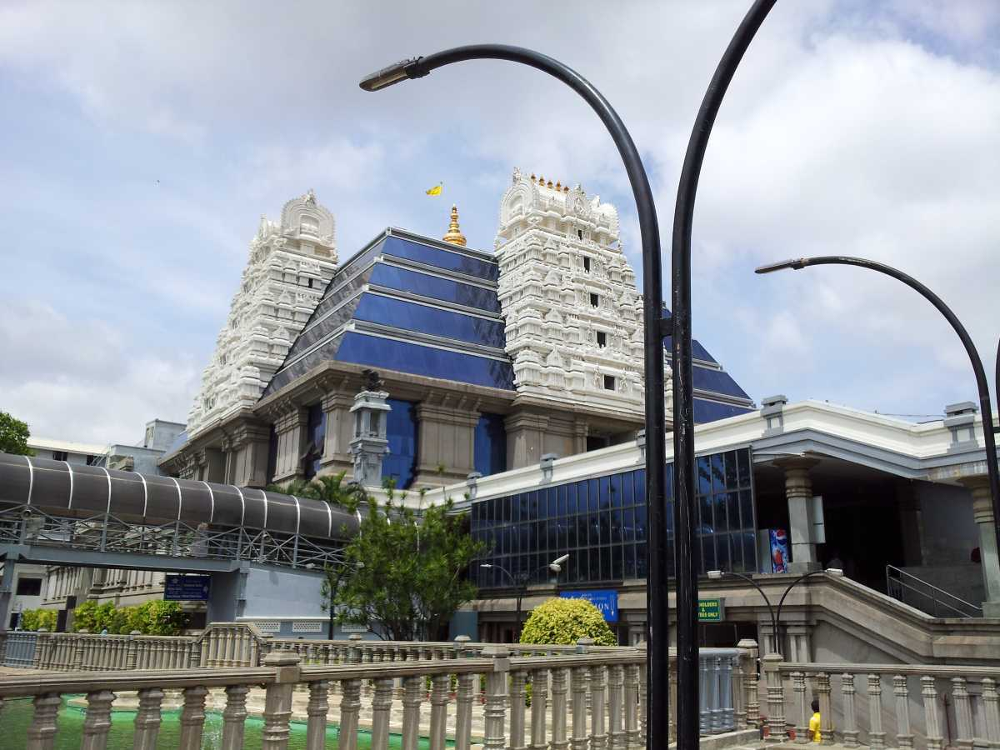
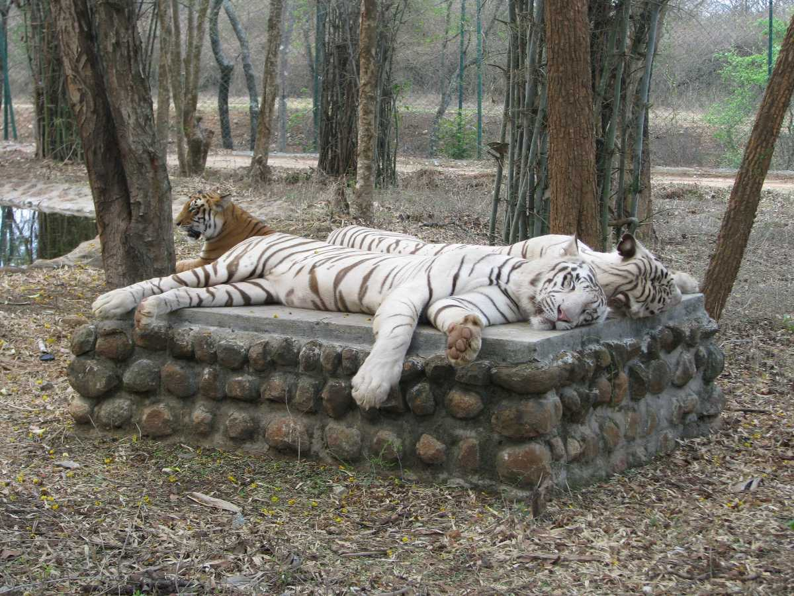
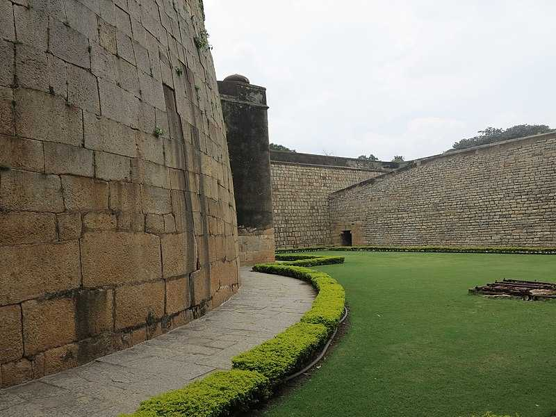
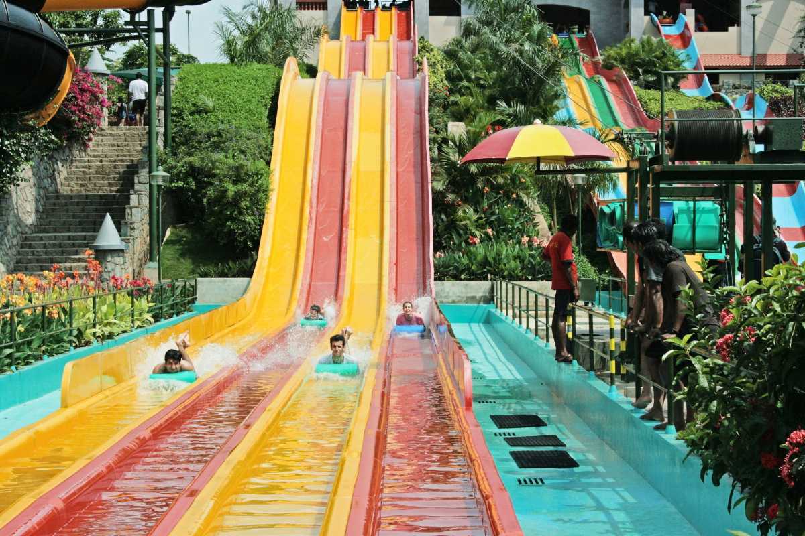

city in Diversity
Banglore palace

The Bangalore Palace is a stunning landmark located in Bangalore, India. It was built in the 19th century and is known for its architectural grandeur, inspired by England's Windsor Castle. The palace is open to the public and offers tours showcasing its opulent interiors, lush gardens, and historical significance
Lal bagh

Lalbagh Botanical Garden is a renowned botanical garden located in Bangalore, India. It was commissioned by Hyder Ali, the ruler of Mysore, in the 18th century and later completed by his son Tipu Sultan. Lalbagh is famous for its sprawling gardens, diverse collection of plant species, and iconic glasshouse, which hosts flower shows. It's a popular destination for nature lovers, joggers, and tourists alike
cubbon park
Cubbon Park offers a tranquil escape from the hustle and bustle of Bangalore city life, with its serene walking paths, shady trees, and picturesque landscapes. It's a perfect spot for a leisurely stroll, a jog, or simply to unwind amidst nature's beauty
UB City
UB City is a posh commercial hub in Bangalore, offering upscale shopping, dining, and entertainment options, all in one luxurious complex
vidhan soudha
Vidhana Soudha is an iconic building in Bangalore, India, serving as the seat of the state legislature of Karnataka. It's a magnificent example of Neo-Dravidian architecture and houses the offices of the Legislative Assembly and the Legislative Council of Karnataka. Completed in 1956, it's one of the largest legislative buildings in India and is known for its grandeur and architectural significance
iskon temple
The ISKCON Temple in Bangalore, officially known as the Sri Radha Krishna Temple, is a prominent spiritual landmark dedicated to Lord Krishna. It's part of the International Society for Krishna Consciousness (ISKCON) movement. The temple is renowned for its beautiful architecture, intricate carvings, and serene atmosphere.
Bannerghatta National park
Bannerghatta Biological Park is a popular destination near Bangalore, India, known for its diverse wildlife and conservation efforts. It encompasses a zoo, a butterfly park, a safari park, and a rescue center for animals. Visitors can explore a wide range of wildlife, including lions, tigers, elephants, and various species of birds and reptiles.
banglore fort
The Bangalore Fort, constructed by Kempe Gowda I in 1537, served as a pivotal stronghold in the region's history, witnessing the rule of various dynasties, including the Vijayanagara Empire, the Sultanate of Bijapur, and later, the Mysore Kingdom under Hyder Ali and Tipu Sultan.
wonderla
Wonderla Bangalore is one of the largest and most popular amusement parks in India, located on the outskirts of Bangalore city. It features a wide array of thrilling rides, including roller coasters, water slides, wave pools, and family-friendly attractions.